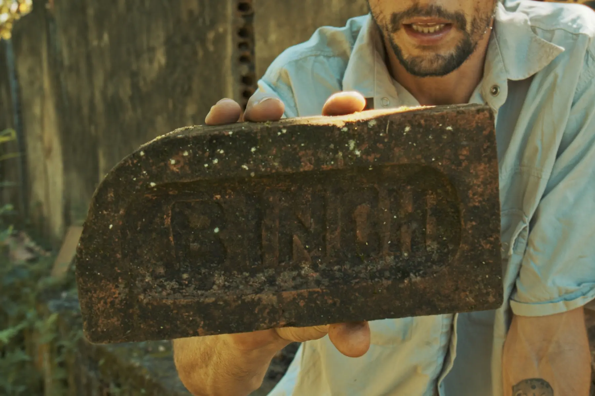
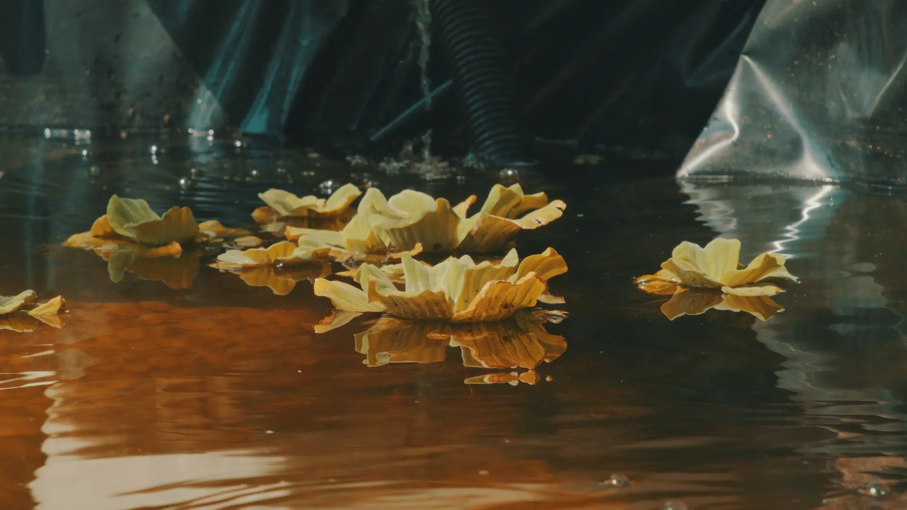

Documentary film / scoreFilme documental / trilha
Terra Boa
A documentary and original soundtrack centered on land, memory and ways of inhabiting time.Documentário e trilha original centrados em terra, memória e modos de habitar o tempo.
NotesNotas
The film approaches its subject through attention rather than explanation.O filme se aproxima de seu tema pela atenção, não pela explicação.
The soundtrack extends the rhythm of the image, treating sound as presence rather than illustration.A trilha prolonga o ritmo da imagem, tratando o som como presença e não como ilustracao.
DetailsDetalhes
MediaMídia


